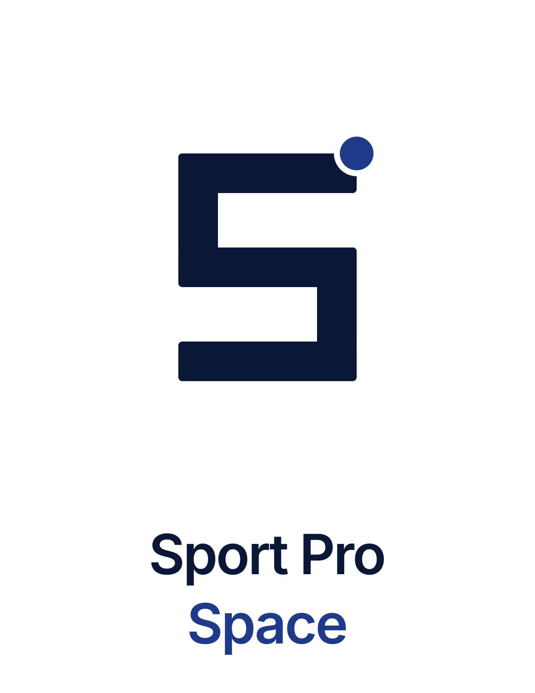
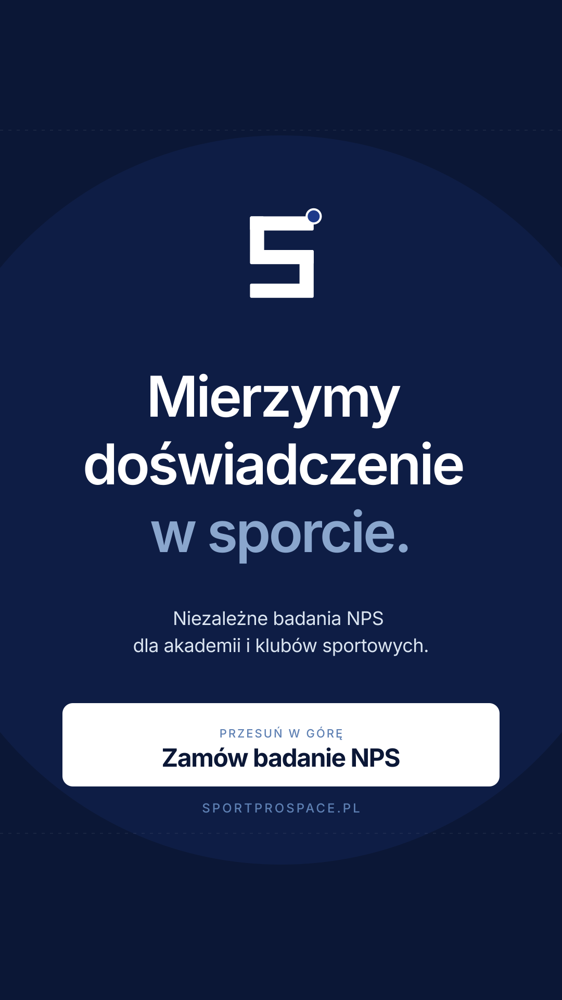
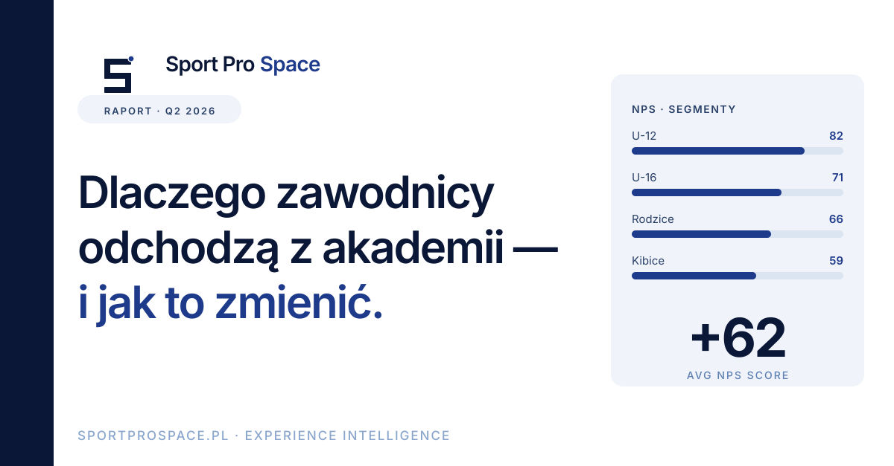
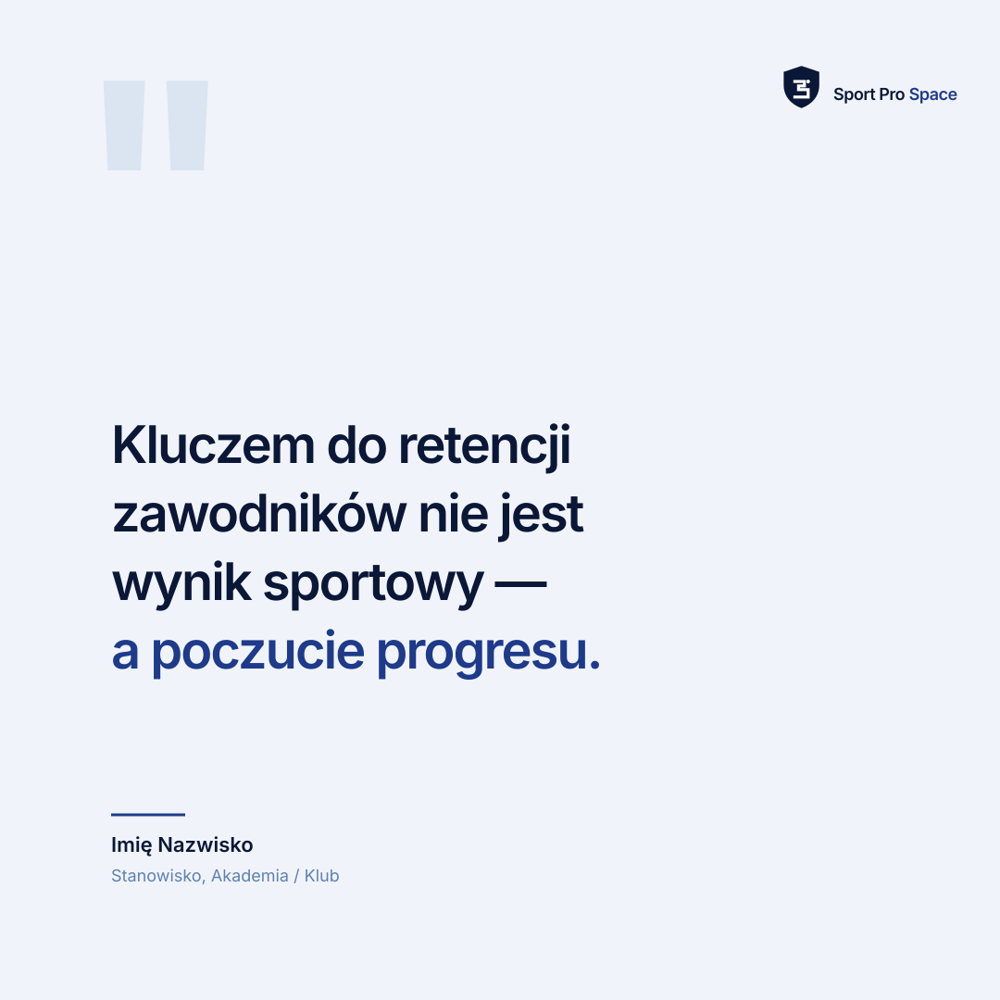
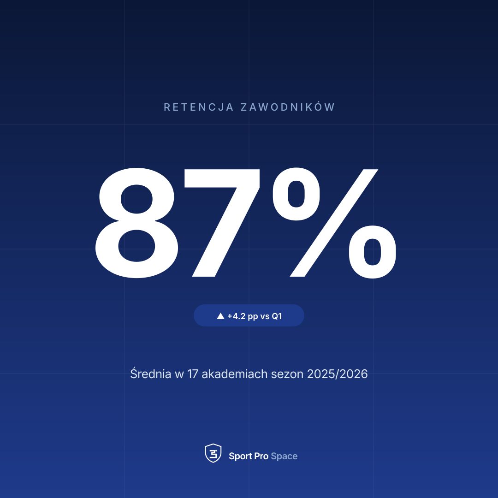
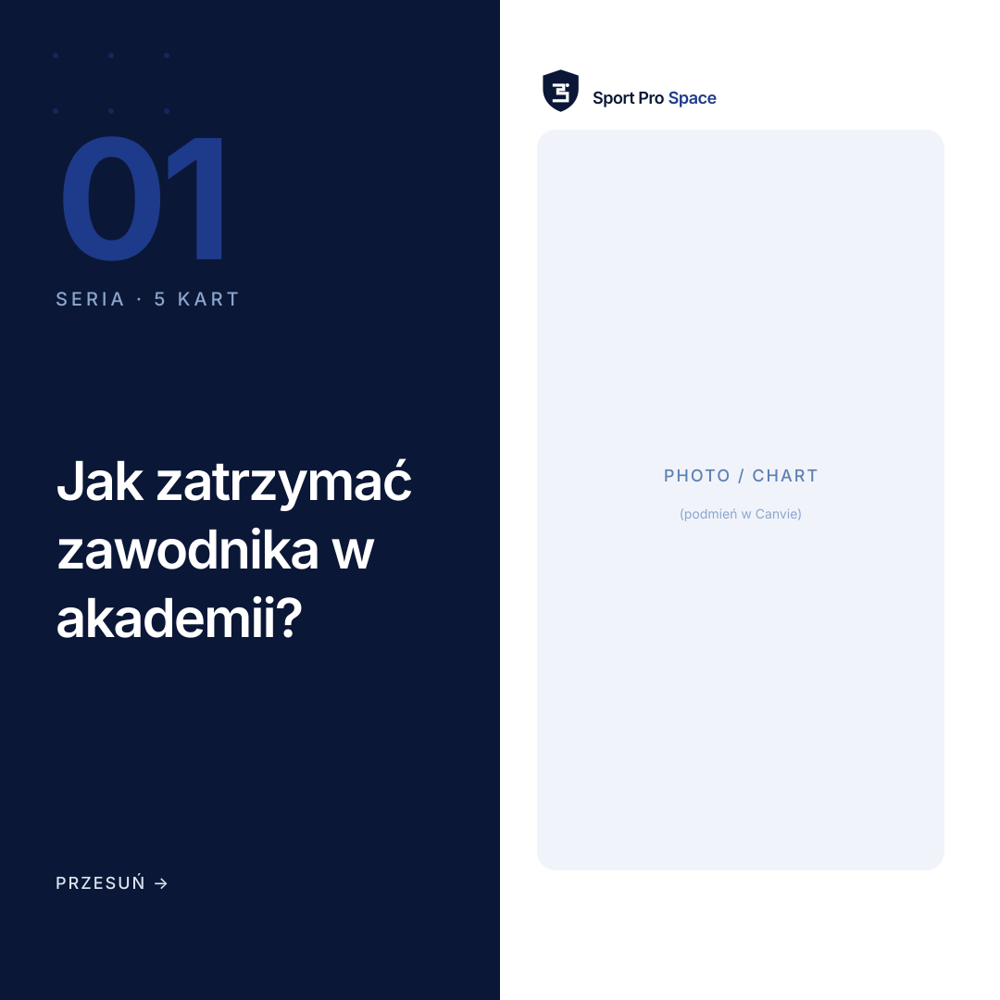
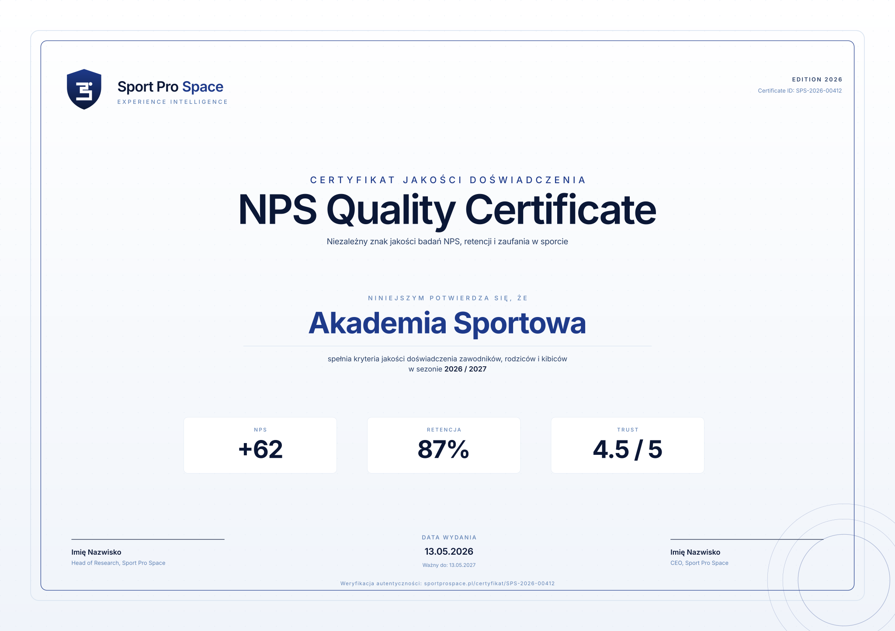
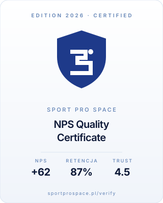

Sport Pro Space
Brand Manual
System wizualny niezależnej platformy badań doświadczenia w sporcie. Dokument służy do utrzymania spójności komunikacji w kanałach digital, druku i obecności partnerskiej.
1. Marka
Nazwa
Pełna nazwa: Sport Pro Space. Pisana zawsze z trzema osobnymi słowami, każde z dużej litery. Dopuszczalny skrót w komunikacji wewnętrznej: SPS. W kontekście wzmianek prasowych zawsze pełna nazwa.
Tagline
Experience Intelligence for Sport.
Krótka forma używana pod logo lub w bannerach. PL: „Mierzymy doświadczenie w sporcie."
Pillars
Independence · niezależna metodologia, brak konfliktu interesów
Evidence · decyzje oparte na danych z badań i ankiet
Clarity · raport jest produktem — czytelny, działający, konkret
2. Logo
Logo składa się z symbolu (monogram "S" zbudowany geometrycznie z prostokątów, jak segmenty 7-segmentowego wyświetlacza / data bar) oraz wordmarku (Sport Pro Space). Mała kropka w prawym górnym rogu to akcent data-point — jedyny element koloru navy-800 na ciemnym tle.
Symbol — warianty tła
Lockup poziomy (preferowany)
Lockup poziomy — inverse (ciemne tło)
Lockup pionowy (compact/social)

Strefa ochronna i minimalny rozmiar
Strefa ochronna = 1× wysokość symbolu ze wszystkich stron — żadne inne elementy graficzne ani teksty nie wchodzą w ten obszar.
Minimalny rozmiar:
- Symbol: 16 px (digital), 8 mm (druk)
- Lockup horyzontalny: szerokość 120 px (digital), 32 mm (druk)
Czego nie wolno
Trzymaj strefę ochronną. Używaj wariantu mono na tłach pod-pełnokolorowych.
Nie zmieniaj proporcji, nie obracaj, nie dodawaj efektów (cień, blask, outline) do oryginalnego SVG.
Symbol kolorowy tylko na tłach jaśniejszych niż navy-200. Inaczej — wariant inverse.
Wyłącznie warianty zatwierdzone — kolorowy / mono navy / outline white.
3. Kolor
Paleta jest monochromatyczna navy. Zero kolorów pomocniczych. Cała hierarchia, kontrast i emocja wynikają z gradacji jasności. Stany systemowe (zielony „success", czerwony „error") nigdy nie pojawiają się w komunikacji marketingowej.
Skala navy
★ navy-800 i navy-950 to kolory marki. Pozostałe odcienie pełnią rolę systemową (tła, ramki, hover, muted text).
Zastosowanie systemowe
| Rola | Kolor | Hex |
|---|---|---|
| Tło główne | white | #FFFFFF |
| Tło sekundarne | navy-50 | #F0F4FA |
| Border / divider | navy-100 | #DBE5F1 |
| Muted text | navy-400 / 500 | #5E80B3 / #3F6398 |
| Body text | navy-700 | #293F66 |
| Display text / headlines | navy-950 | #0B1736 |
| Akcent (link, CTA, dane) | navy-800 | #1E3A8A |
| Dark surface (banner, footer) | navy-950 | #0B1736 |
Kontrast
Wszystkie pary tekst/tło muszą spełniać WCAG AA (4.5:1 dla body, 3:1 dla display ≥ 24px). Bezpieczne kombinacje: navy-700/950 na białym, navy-50/100/200 na navy-950.
4. Typografia
Jeden font: Inter (Google Fonts, weights 400/500/600/700). Brak fontów dekoracyjnych, brak serif. Display = Inter SemiBold (600) z negatywnym tracking (-0.02 → -0.035em).
Zasady
- Headline zawsze SemiBold 600 — nigdy Bold 700 (zarezerwowane do liczb statystyk)
- Tracking negatywny w nagłówkach: -0.02em (H2-H3) → -0.035em (Display)
- Line-height: nagłówki 1.05–1.2, body 1.55–1.6, caption 1.4
- Liczby ≥ 4 cyfr — cienka spacja jako separator (1 200, 12 400)
5. Voice & Tone
Konkret, dane, brak marketingowego bełkotu. Mówimy do dyrektorów akademii, prezesów klubów i działu marketingu profesjonalnych zespołów. Oni mają już dość obietnic — chcą liczb i procesu.
- "68% zawodników odchodzi przez brak feedbacku"
- "Raport + rekomendacje w 4 tygodnie"
- "Niezależna metodologia, bez konfliktu interesów"
- "Rewolucyjna platforma nowej generacji"
- "Empower your athletes"
- "Innowacyjne synergiczne rozwiązanie"
Zasady stylistyczne
- Pisz po polsku. Anglicyzmy tylko branżowe (NPS, retention, engagement) — pisane bez kursywy.
- Druga osoba l.mn. ("Wiesz", "Pomagamy") — partnerska, ale nie protekcjonalna.
- Liczby w nagłówkach to siła: zawsze konkretna metryka zamiast przymiotnika.
- CTA aktywne i krótkie: "Zamów badanie", "Zobacz jak działamy", "Pobierz raport".
6. Social media — specyfikacja
| Format | Rozmiar | Plik | Display |
|---|---|---|---|
| Profile picture (upload) | 1080×1080 | social/instagram/ig-profile-1080x1080.svg | ⬤ koło |
| Post kwadratowy | 1080×1080 | social/instagram/ig-post-1080x1080.svg | ▪ 1:1 |
| Post portrait (rekomendowany — więcej zasięgu) | 1080×1350 | social/instagram/ig-post-1080x1350.svg | ▬ 4:5 |
| Story / Reel | 1080×1920 | social/instagram/ig-story-1080x1920.svg | ▬ 9:16 |
Avatar: kwadrat → wyświetlony jako koło


| Format | Rozmiar | Plik | Display |
|---|---|---|---|
| Company Page logo | 400×400 | social/linkedin/li-company-logo-400x400.svg | ▪ zaokrąglony kwadrat |
| Personal profile picture | 800×800 | social/linkedin/li-profile-800x800.svg | ⬤ koło |
| Banner (firma i profil osobisty) | 1584×396 | social/linkedin/li-banner-1584x396.svg | ▬ poziomy |
| Post z grafiką | 1200×627 | social/linkedin/li-post-1200x627.svg | ▬ 1.91:1 |

Company logo (kwadrat) vs Personal (koło)


Eksport do PNG/JPG
SVG → PNG dla wgrywania na platformy (które wymagają rastra):
- Inkscape:
inkscape input.svg --export-type=png --export-width=1080 - ImageMagick:
magick -density 300 -background none input.svg -resize 1080x1080 output.png - Online: cloudconvert.com / svgomg → eksport do PNG w wymaganym rozmiarze
- Canva: upload SVG → Download as PNG/JPG (zachowaj wymiar projektu)
7. Szablony Canva
5 szablonów .svg w folderze brand/canva/ — gotowe do importu w Canva (Uploads → Upload files → SVG). Po imporcie zrób Ungroup by edytować poszczególne warstwy tekstowe.
canva-template-quote.svg— cytat / opinia eksperta (1080×1080)canva-template-stat.svg— duża liczba / KPI (1080×1080, ciemne tło)canva-template-carousel-cover.svg— okładka karuzeli (1080×1080)canva-template-announcement.svg— ogłoszenie raportu / wydarzenia (1080×1080)canva-template-story-1080x1920.svg— Story / Reel cover (1080×1920)



8. Certyfikat
Niezależny znak jakości doświadczenia w sporcie. Wydawany na 12 miesięcy, z coroczną re-certyfikacją na podstawie powtórnego badania NPS / retencji / trust.
Wariant A — Certyfikat A4 landscape (do druku i wysyłki PDF)
Plik: certificate/certificate-a4-landscape.svg · 297×210 mm @ 300 dpi (3508×2480 px). Edytowalne pola: nazwa odbiorcy, sezon, KPI (NPS, retencja, trust), data wydania/ważności, ID, podpisy.

Wariant B — Web badge (do osadzania na stronie klienta)
Plik: certificate/certificate-web-badge.svg · 320×400 px, zoptymalizowany jako linkowany badge w footerze / sekcji „O klubie". Snippet osadzania: certificate/embed-snippet.html.

Zasady wydawania
- Każdy certyfikat ma unikalny ID:
SPS-{rok}-{nr seryjny 5-cyfrowy} - Weryfikacja online:
sportprospace.pl/verify/{ID} - Klient nie może modyfikować pliku certyfikatu — wolno mu wyłącznie wbudować nieedytowaną wersję SVG/PNG/PDF dostarczoną przez Sport Pro Space.
- Re-certyfikacja: nowy plik z nowym ID, stary traci ważność z dniem określonym w polu "Ważny do".
9. Struktura plików
brand/
├── MANUAL.html ← ten dokument (v1.1)
├── logo/
│ ├── logo-symbol.svg ← symbol S · ciemne tło (główny)
│ ├── logo-symbol-white-bg.svg ← symbol S · białe tło
│ ├── logo-symbol-navy50-bg.svg ← symbol S · navy-50 tło
│ ├── logo-lockup-horizontal.svg ← lockup poziomy · jasny
│ ├── logo-lockup-horizontal-inverse.svg ← lockup poziomy · ciemny
│ ├── logo-lockup-stacked.svg ← lockup pionowy
│ └── logo-wordmark.svg ← sam tekst
├── social/
│ ├── instagram/
│ │ ├── ig-profile-1080x1080.svg ★ WGRAJ NA IG (profil)
│ │ ├── ig-profile-320x320.svg ← podgląd małego rozmiaru
│ │ ├── ig-post-1080x1080.svg ← szablon post 1:1
│ │ ├── ig-post-1080x1350.svg ← szablon post 4:5 (więcej zasięgu)
│ │ └── ig-story-1080x1920.svg ← story / reel
│ └── linkedin/
│ ├── li-company-logo-400x400.svg ★ WGRAJ NA LI (company logo)
│ ├── li-profile-800x800.svg ★ WGRAJ NA LI (osobisty profil)
│ ├── li-banner-1584x396.svg ← banner firmy/profilu
│ └── li-post-1200x627.svg ← szablon post
├── canva/
│ ├── README.md ← jak importować do Canvy
│ ├── canva-template-quote.svg
│ ├── canva-template-stat.svg
│ ├── canva-template-carousel-cover.svg
│ ├── canva-template-announcement.svg
│ └── canva-template-story-1080x1920.svg
└── certificate/
├── certificate-a4-landscape.svg ← główny certyfikat
├── certificate-web-badge.svg ← badge do www
└── embed-snippet.html ← snippet osadzenia